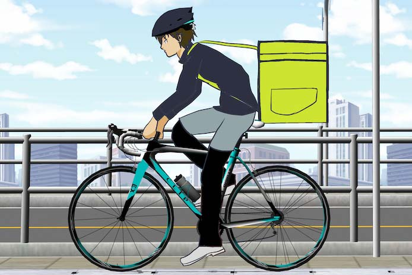
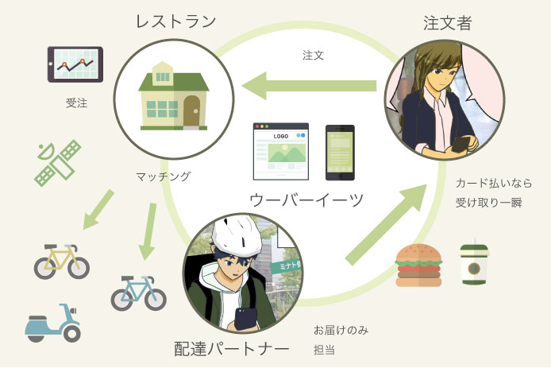

ウーバーイーツとは何？
何も知らないけど意味とか仕組みとかをわかりやすく教えて？
メリット・デメリットや使いこなす方法も教えて？
こんな疑問に答えます。
ウーバーイーツとは新時代の料理のデリバリーサービスです。

この図のようにスマホアプリやWebから注文するとレストランと配達する人がマッチングされ効率良く料理が届けられる仕組みです。
１品からでも気軽に注文可能でカード払いなら受け取りも一瞬です。
スマホの普及により実現した最先端のマッチングサービスと言えると思います。
ウーバーイーツの大元の運営会社ウーバー・テクノロジーズは配車サービスで有名なアメリカ企業です。
ウーバイーツと同様にITとGPSを駆使して「車に乗りたい人」と「運転手」をマッチングさせ、タクシーに代わる移動手段を提供するのがメイン事業です。
ウーバーイーツのサイトはこちら
ウーバーイーツの配達員をやってみようかなと気になった方は、こちらのリンクから登録できます。